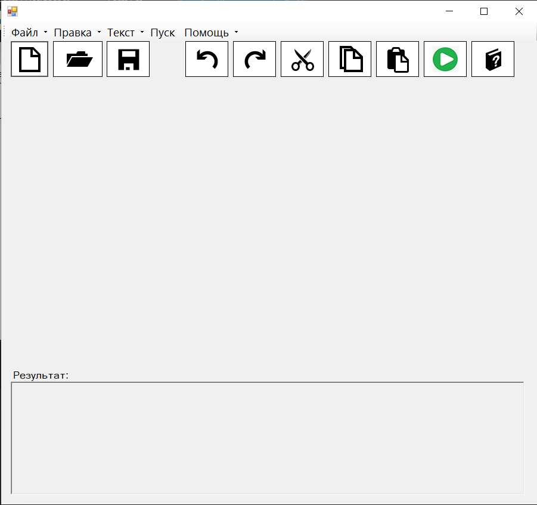
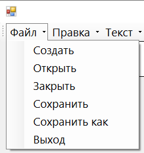
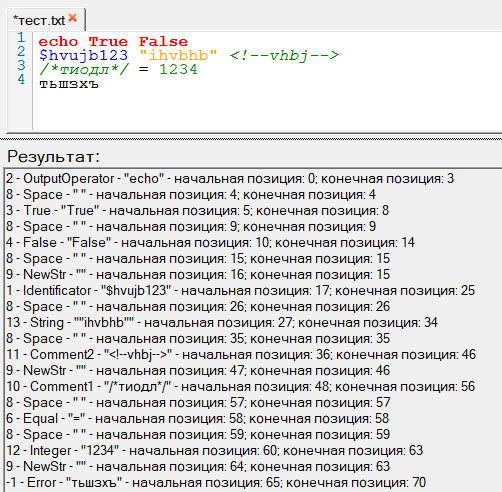
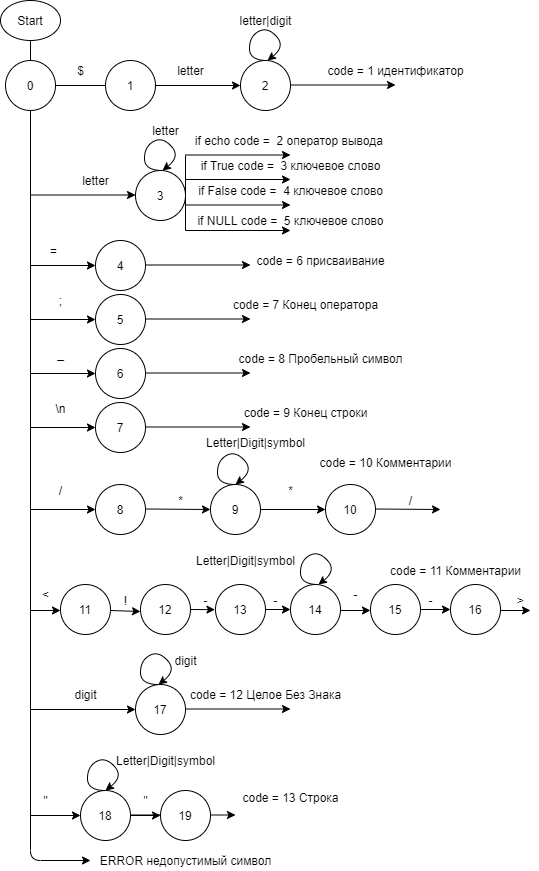
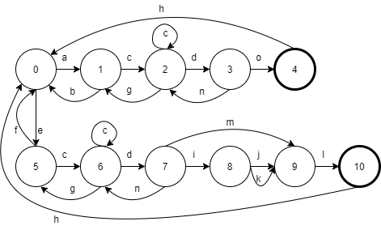
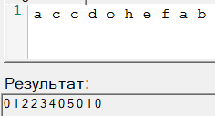
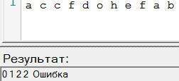
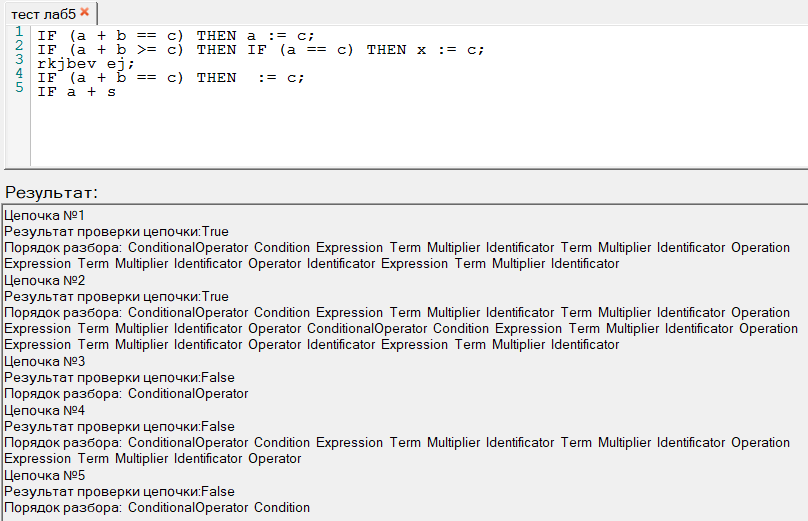

В программе реализованы все функции текстового редактора: открытие и сохранение файлов, копирование и вставка данных.
Так же присутствует функция отмены и возврата действия. Это позволяет работать с приложением как с простым текстовым редактором.
На рисунке 1 представлен интерфейс программы.

Рисунок 1 - интерфейс программы.
В меню файл есть кнопки для работы с основными функциями текстового редактора.

Рисунок 2 - меню файл.
При нажатии на кнопку "Пуск" выполняется лексический анализ (сканирование) введенного текста.
В окне вывода появляется результат работы сканера: Код лексеммы, ее название, текст лексеммы, начальная позиция, конечная позиция
На рисунке 3 продемонстрирован пример работы лексического анализатора.

Рисунок 3 - Пример работы лексического анализатора.
Анализ осуществляется по следующей схеме:

Конечный автомат:

Состояние и переходы графа состояний автомата (4 лаба):
a - пополнение карты
b - отмена пополнения
c - внесение наличных
d - проверка суммы
e - выбор операции оплаты анкеты
f - отмена оплаты
g - возврат денег
h - возврат в исходное состояние
i - выбор действия со сдачей (если требуется)
j - зачисление сдачи на телефон
k - выдача сдачи наличными
l - проведение оплаты
m - сдача не требуется
n - отмена оплаты
o - отмена оплаты
0 - исходное состояние
1 - состояние готовности к пополнению карты
2 - прием денег
3 - сумма для пополнения внесена
4 - деньги внесены
5 - готовность к оплате анкеты
6 - прием денег
7 - сумма для анкеты набрана
8 - выбрано действие со сдачей
9 - сдача выдана
10 - оплата выполнена
Таблица состояний и переходов:
| Текущее состояние | Символ | Новое состояние |
|---|
| 0 | a | 1 |
| 0 | e | 5 |
| 1 | b | 0 |
| 1 | c | 2 |
| 2 | c | 2 |
| 2 | d | 3 |
| 3 | n | 2 |
| 3 | o | 4 |
| 4 | h | 0 |
| 5 | c | 6 |
| 5 | f | 0 |
| 6 | c | 6 |
| 6 | d | 7 |
| 6 | g | 8 |
| 7 | n | 6 |
| 7 | m | 9 |
| 7 | i | 8 |
| 8 | j | 9 |
| 8 | k | 9 |
| 9 | l | 10 |
| 10 | h | 0 |
Результат работы автомата (список состояний):

Результат работы при неожиданном символе:

Лабораторная работа №5:
Грамматика:
G[<условный оператор>]:
1. <условный оператор> ::= IF(<условие>) THEN<оператор>
2. <условие> ::= <выражение><операция отношения><выражение>
3. <выражение> ::= <терм>{ +< терм >}
4. < терм > ::= < множитель >{ *< множитель >}
5. < множитель > ::= < идентификатор > | (< выражение >)
6. < идентификатор > ::= < буква >{< буква >|< цифра >}
7. < оператор > ::= < идентификатор >:=< выражение > | < условный оператор >
8. < операция отношения > ::= ”==” || ”<” | ”<=” | ”>” | ”>=” | ”!=”
< буква > ::= A | B | ...| Y | Z
< цифра > ::= 0 | 1 | ...| 8 | 9
Тестовые примеры:
